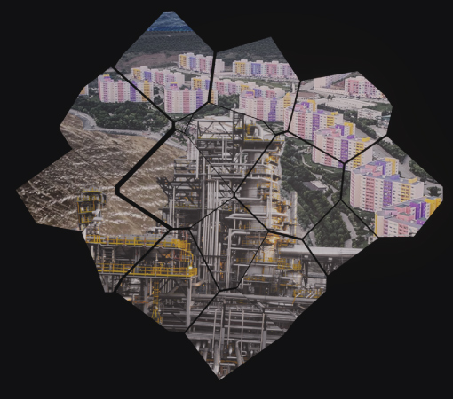
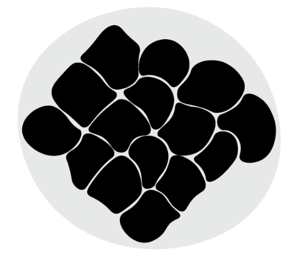
Urban Topography Research
MARUF’22 (Marmara Urban Forum) is a collaborative project between AURA İstanbul, and the Union of Municipalities of Marmara, which aims to map out the ecological, urban planning, and pollution caused by political issues that have arisen in Turkey. These issues include inappropriate industrialization, uncontrolled water usage for farming, and political tourism, and the resulting consequences. During our research in Izmit and Sapanca, we witnessed the water pollution caused by harbors and industrial areas within the city, and the extreme rent prices that were caused by political tourism decisions. As a result, many natives have been forced to move to other cities. Additionally, there is an ancient city of Nikomedia under İzmit, although İzmit is currently designed as an industrial city to support Istanbul. In Bandırma, factories are dumping their waste into waterways, which connect to the Marmara Sea, causing significant pollution. The ancient city of Kyzikos is also located nearby, yet the city’s current focus is on production rather than culture. Similarly, we observed similar types of pollution in Yalova.
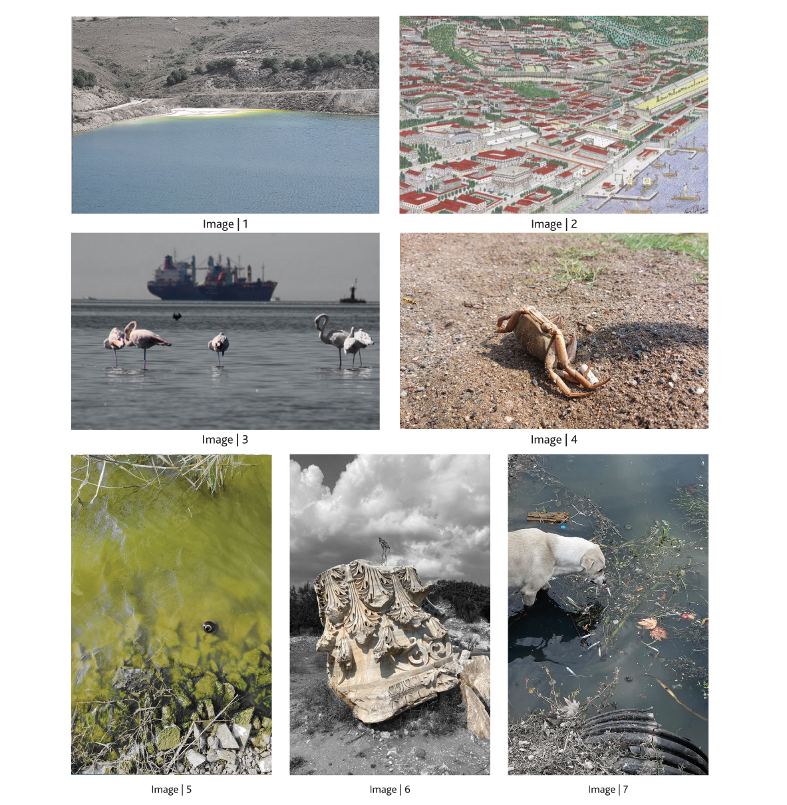
Images from the Sites
In Bandırma, the ETİBANK electricity company operates factories near the dam that releases water to the Marmara Sea. Despite this, ETİBANK continues to discharge waste into the dam. However, it is not too late to take action to address this issue. (Image 1)
The city of Nikomedia, an ancient city, still exists underground in İzmit’s history. With effort, it can be uncovered and brought to light. (Image 2)
Flamingos used to visit İzmit’s Gulf during their migrations, but due to pollution caused by cargo ships, their numbers have decreased significantly. Although some still visit, this highlights the importance of taking action to repair the damage we have caused. (Image 3)
Visitors to İzmit’s shores may witness the remains of dead sea creatures, from fish to crabs, due to human waste. However, this does not mean that the situation is irreversible. We still have time to take action and address these issues. (Image 4)
Kuş Lake is a popular tourist spot in Turkey where people often go to enjoy nature and have picnics. Unfortunately, this pleasure has been taken away due to uncontrolled agricultural practices and tourism. Farmers near the lake use it as a water source for their crops, leading to environmental degradation. Moreover, human waste adds to the pollution, making the condition of Kuş Lake even worse. (Image 5)
On the outskirts of Bandırma, the ruins of the ancient city of Kyzikos can be found. Although located near farming areas, the municipality has left it uncovered. (Image 6)
Waste in İzmit continues to pollute the bay, especially at the shore where human waste is evident. Stray animals often rummage through the garbage, and dead sea creatures can also be found. (Image 7)
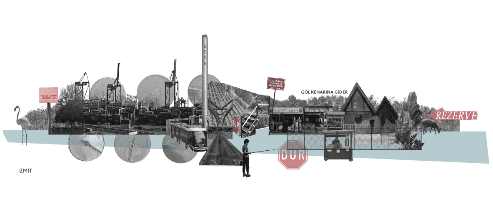
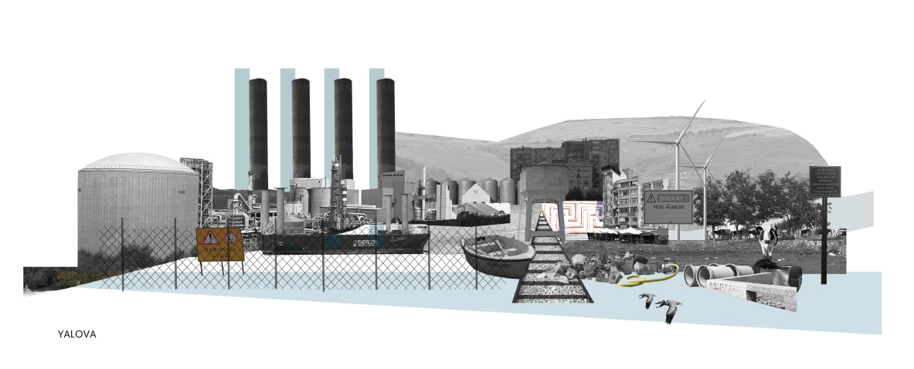
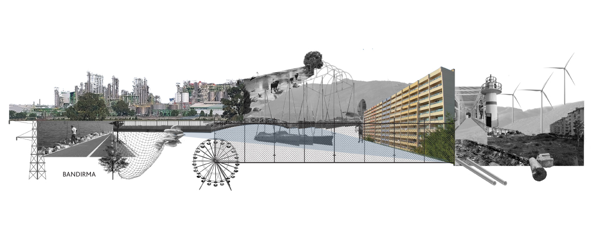
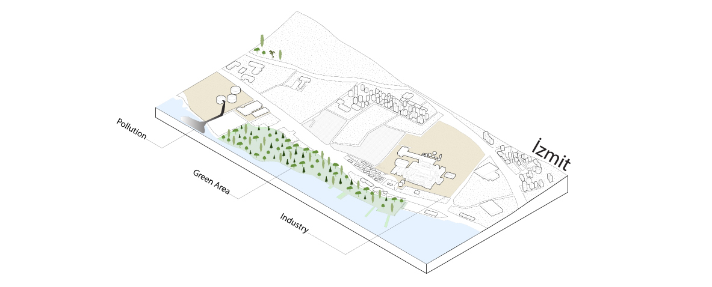
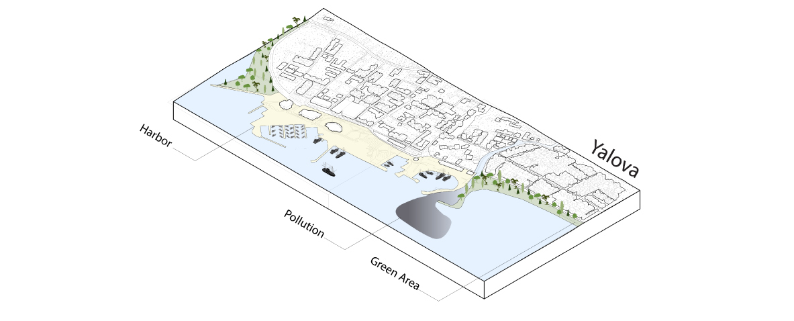
Artificial Environments Hazards
Izmit and Yalova have similar environmental issues caused by factories and industrial areas that pollute air and water, harming aquatic life and posing health risks. Despite this, both cities have green areas that benefit the community and the environment. They also have important port areas that can contribute to pollution if not managed properly.
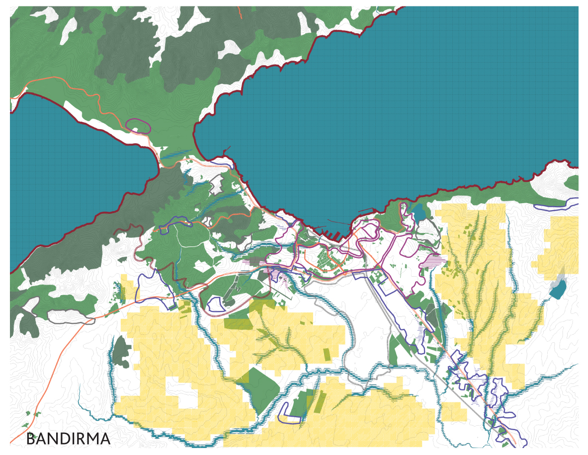
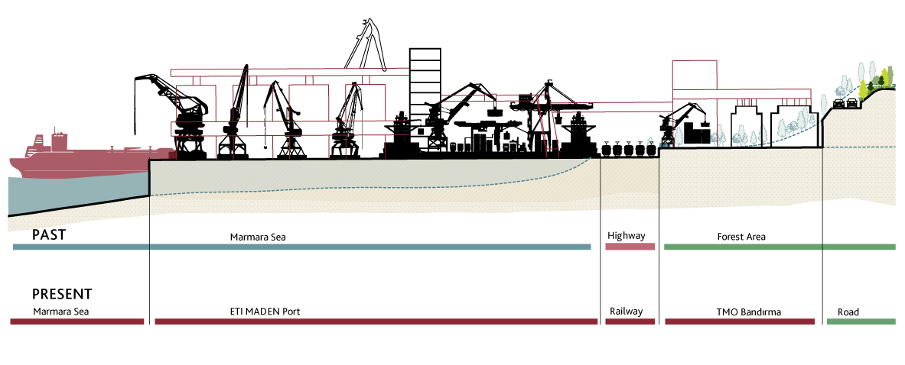
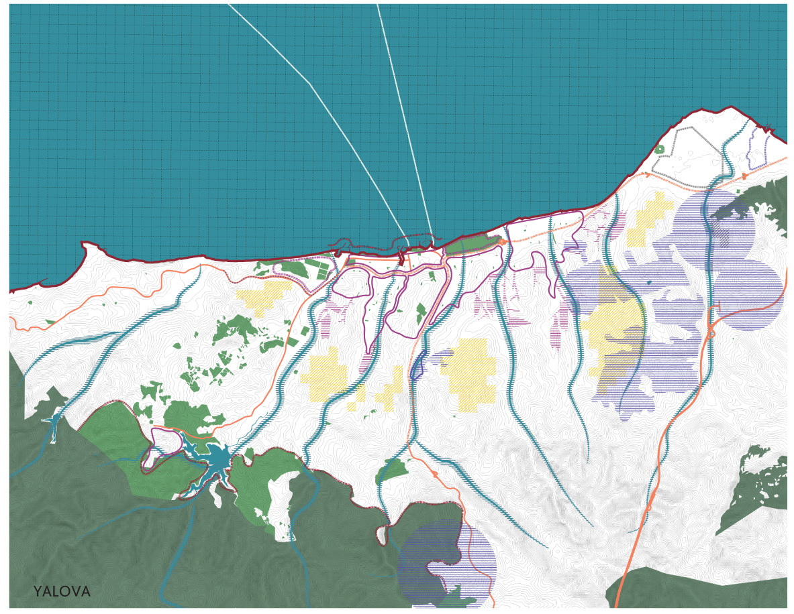
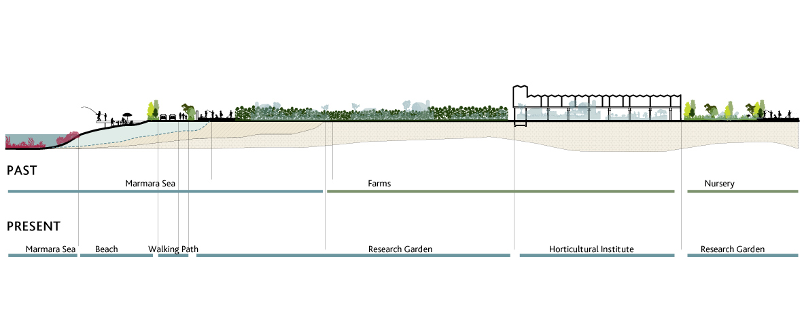
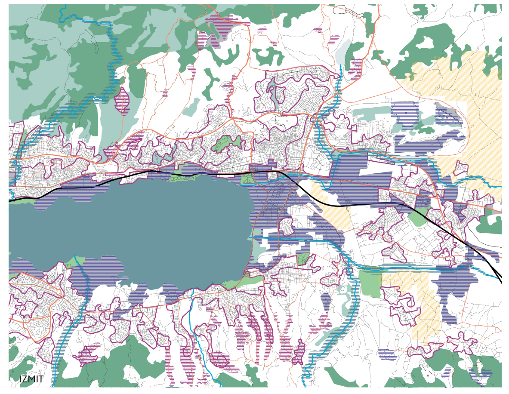
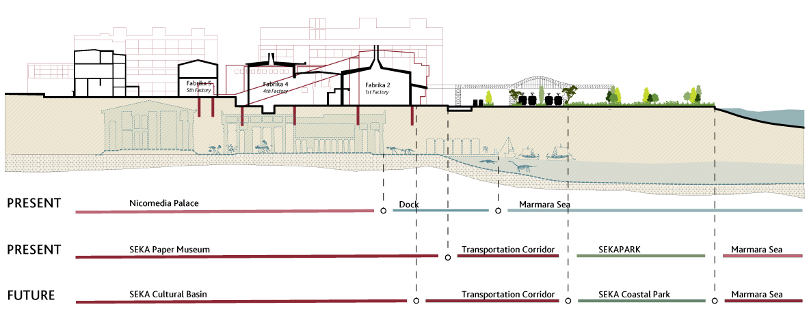
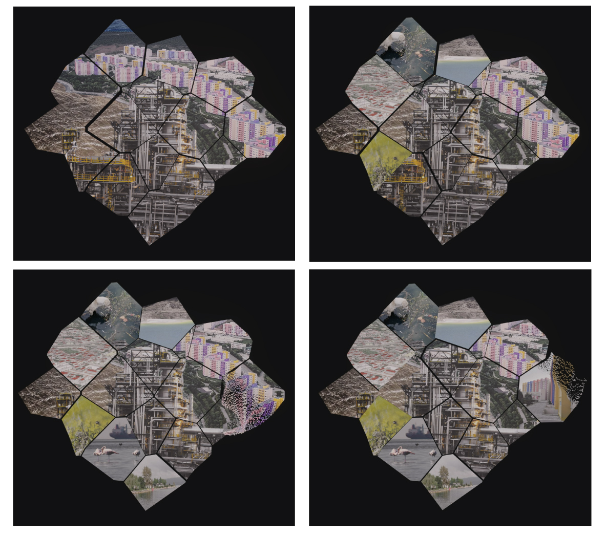
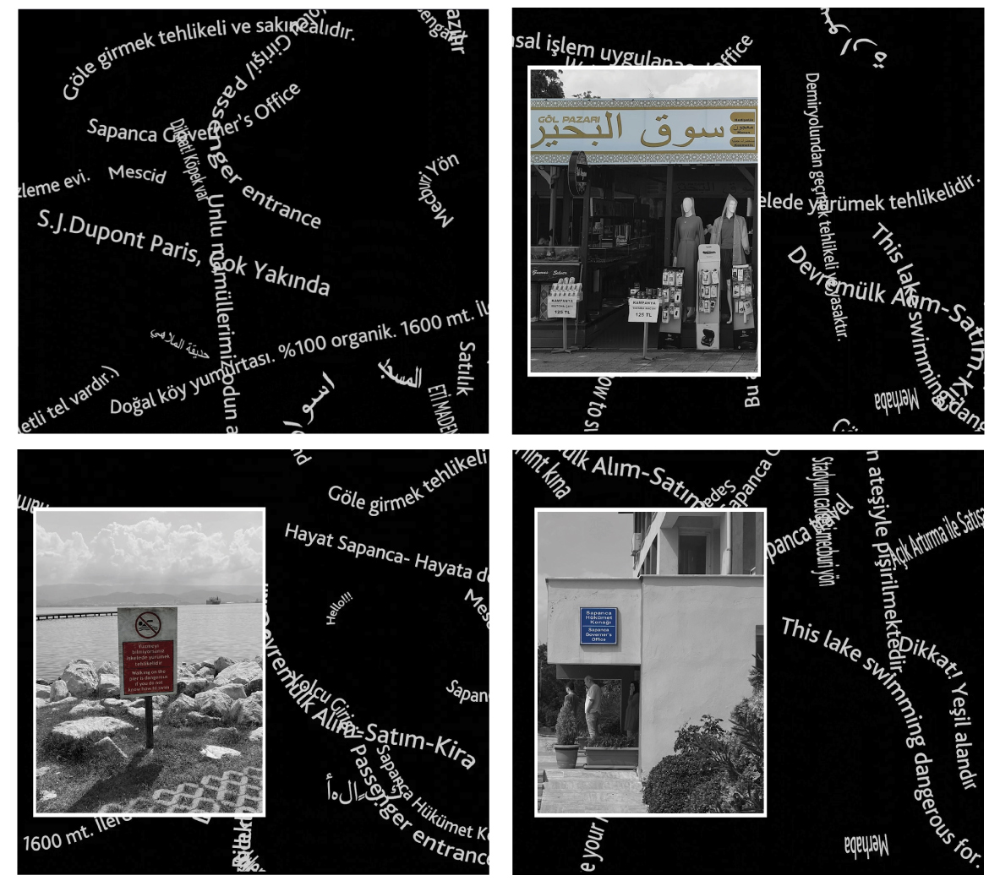
Video Installations
Through our journey, we have talked with lots of natives. What we discovered is that for natives, their cities were once very peaceful, not much a touristic place but a place for people who are retired. However, people started to build hotels next to the Bay and make it accessible just for their customers. They even made small ditches around the hotel to block anyone who came close. They even burned down some green areas which have a view to the lake, to build luxurious summerhouses. These decisions are not for the natives or the Turkish citizens. We know that from their prices. While all those things happened we asked natives how they felt or why the municipality is not taking action against this situation. They say that the municipality does not care and they start to feel like a stranger to their own home. Even some of them migrated to another town.
To show this problem and commentate on this situation we wanted to use the placards and signs around town. Show how absurd they are, show how translations are made poorly which shows they do not care about service only money, and show the chaos of languages. You can find every type of language anywhere. Some people just use Arabic while some people use Persian and some just use English. There is not a common decision as to which languages to use.
Since we saw this situation as chaos we made a video that every words everywhere and called it “Words”.
The installation aims to showcase what has been lost and polluted in the Marmara region, as well as the remaining cultural riches that still exist. The main objective is not just to depict the chaos and pollution that we are facing, but also to highlight the potential for change and action. Regardless of whether the situation is good or bad, we can still take action to save our cities and unlock their full potential.